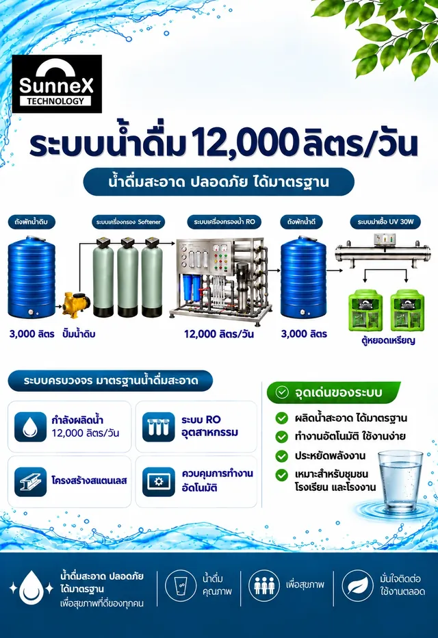

เครื่องกรองน้ำดื่ม RO สำหรับชุมชน โรงเรียน และหน่วยงาน
เลือกระบบเครื่องกรองน้ำ Sunnex ให้ตรงคุณภาพน้ำและปริมาณใช้งาน มีเครื่องกรองน้ำดื่ม RO ขนาด 3 คิว 6 คิว 12 คิว และ 24 คิวต่อวัน พร้อมข้อมูลกำลังผลิต ถังพัก และชุดเตรียมน้ำ เพื่อวางระบบน้ำดื่มให้เหมาะกับพื้นที่ของคุณ
เปรียบเทียบเครื่องกรองน้ำดื่ม RO 3Q, 6Q, 12Q และ 24Q
ทั้ง 4 ขนาดอยู่ใน หน้าสินค้าเครื่องกรองน้ำดื่ม RO Sunnex เดียวกัน กดขนาดที่สนใจเพื่อเปิดภาพและสเปคที่เลือกไว้ได้ทันที
| ขนาดเครื่องกรองน้ำดื่ม | กำลังผลิตที่ระบุ | ถังพักน้ำดิบ | ถังพักน้ำดี | เลือกรุ่น |
|---|---|---|---|---|
| เครื่องกรองน้ำดื่ม RO 3Q / 3 คิว | 3,000 ลิตร/วัน | 500 ลิตร | 500 ลิตร | ดูรุ่น 3Q → |
| เครื่องกรองน้ำดื่ม RO 6Q / 6 คิว | 6,000 ลิตร/วัน | 1,000 ลิตร | 1,000 ลิตร | ดูรุ่น 6Q → |
| เครื่องกรองน้ำดื่ม RO 12Q / 12 คิว | 12,000 ลิตร/วัน | 3,000 ลิตร | 3,000 ลิตร | ดูรุ่น 12Q → |
| เครื่องกรองน้ำดื่ม RO 24Q / 24 คิว | 24,000 ลิตร/วัน | 3,000 ลิตร | 3,000 ลิตร | ดูรุ่น 24Q → |
1 คิว เท่ากับ 1,000 ลิตร ขนาด 3Q–24Q ในหน้านี้ใช้ระบุกำลังผลิตต่อวัน ส่วนถังพักเป็นความจุเก็บน้ำ ควรประเมินร่วมกับชั่วโมงเดินระบบและช่วงเวลาที่ใช้น้ำ
เครื่องกรองน้ำดื่ม RO ในชุดมีอะไรบ้าง
การเลือกเครื่องกรองน้ำดื่มสำหรับใช้งานต่อเนื่องควรดูทั้งระบบ ตั้งแต่น้ำเข้าจนถึงจุดจ่าย ชุดที่แสดงในหมวดนี้ประกอบด้วยส่วนหลักดังต่อไปนี้ โดยยืนยันรายละเอียดและจำนวนอุปกรณ์ตามใบเสนอราคาของขนาดที่เลือก
ถังพักน้ำดิบและปั๊ม
เตรียมน้ำเข้าชุดผลิตด้วยปริมาณและแรงดันที่เหมาะสม แยกจากถังเก็บน้ำดีเพื่อควบคุมการใช้งานแต่ละส่วน
ชุดเตรียมน้ำ Softener
แบบโครงการแสดงสารกรองคาร์บอน แมงกานีส และเรซิน ควรเลือกกระบวนการให้ตรงกับผลตรวจน้ำและการดูแลสารกรอง
ชุดเครื่องกรองน้ำ RO
ผลิตน้ำผ่านเมมเบรน แยกน้ำผลิตและน้ำเข้มข้นออกจากกัน พร้อมประเมินแรงดัน อัตราผลิต และการจัดการน้ำทิ้ง
ถังพักน้ำดี
เก็บน้ำผลิตไว้รองรับช่วงที่มีการใช้พร้อมกัน ควรมีการดูแลความสะอาด ถัง ท่อ และการจ่ายน้ำอย่างเป็นระบบ
UV และจุดจ่ายน้ำ
ประเมิน UV และตู้จ่ายให้สัมพันธ์กับคุณภาพน้ำและอัตราจ่าย พร้อมตรวจยืนยันคุณภาพน้ำก่อนบริโภค
ควบคุมอัตโนมัติ
ชุดที่แสดงมีการควบคุมอัตโนมัติ ช่วยจัดการการผลิตเป็นขั้นตอนและวางแผนดูแลอุปกรณ์ระหว่างใช้งาน
เลือกเครื่องกรองน้ำดื่มให้เหมาะกับงานของคุณ
น้ำดื่มสำหรับชุมชน
ประเมินปริมาณที่ประชาชนต้องใช้ จุดจ่าย และผู้ดูแลระบบ เพื่อจัดกำลังผลิตและแผนตรวจคุณภาพน้ำให้เหมาะกับการใช้งานจริง
โรงเรียนและสถานศึกษา
ดูช่วงพักหรือช่วงอาหารที่ใช้น้ำพร้อมกัน รวมถึงถังพักและอัตราจ่าย ไม่พิจารณาจากปริมาณผลิตทั้งวันเพียงอย่างเดียว
โรงงานและหน่วยงาน
พิจารณาคนใช้งานแต่ละกะ เวลาผลิตน้ำ ระบบเดิม และพื้นที่ติดตั้ง เพื่อให้ขนาดชุดน้ำดื่มสัมพันธ์กับการจ่ายใช้งาน
หากยังไม่แน่ใจว่าจะใช้เครื่องกรองน้ำดื่ม 3 คิว 6 คิว 12 คิว หรือ 24 คิว ส่งผลตรวจน้ำและปริมาณใช้งานให้ทีมงานช่วยเทียบขนาดได้ การเลือกให้พอดีช่วยวางแผนอุปกรณ์ พื้นที่ และการบำรุงรักษาได้ชัดเจนกว่าการเลือกกำลังผลิตสูงสุดไว้ก่อน
วางระบบน้ำดื่มร่วมกับระบบน้ำประปาหมู่บ้านอย่างไร
สำหรับผู้ดูแล ระบบน้ำประปาหมู่บ้านและระบบน้ำประปาชุมชน ควรแยกหน้าที่ของน้ำใช้ส่วนกลางและน้ำดื่มก่อน เครื่องกรองน้ำดื่ม RO เป็นส่วนผลิตน้ำดื่มตามคุณภาพน้ำเข้าที่ออกแบบ ขณะที่ ระบบกรองน้ำประปาและเครื่องกรองน้ำประปา จัดการคุณภาพน้ำใช้ในภาพรวมตามแหล่งน้ำและปริมาณที่ต้องการ
เริ่มจากน้ำผิวดินหรือน้ำประปาที่มีความขุ่น
หากใช้น้ำจากแม่น้ำ คลอง หรืออ่างเก็บน้ำ ควรประเมิน ถังกรองน้ำประปาผิวดิน สำหรับส่วนจัดการความขุ่นและสนิมเหล็ก หรือเลือก โรงกรองน้ำประปา 12Q และ โรงกรองน้ำประปา 24Q ตามขอบเขตงานน้ำใช้ แล้วจึงประเมินน้ำเข้าส่วน RO อีกครั้ง
เริ่มจากน้ำบาดาล
ตรวจเหล็ก แมงกานีส ความกระด้าง และรายการอื่นที่เกี่ยวข้อง เพื่อเลือก ถังกรองน้ำบาดาล หรือการปรับสภาพก่อนเข้า RO ให้ตรงปัญหา พร้อมจัด ถังพักและถังเก็บน้ำ ให้รองรับการผลิตกับการจ่าย
ระบบกรองน้ำประปาหมู่บ้านจึงอาจใช้หลายกระบวนการร่วมกัน การมีเครื่องกรองน้ำประปาหมู่บ้านหรือโรงกรองน้ำอยู่แล้วไม่ได้หมายความว่าต้องเปลี่ยนทั้งระบบ ควรตรวจคุณภาพน้ำออกและสภาพอุปกรณ์เดิมก่อน เพื่อดูว่าจะต่อยอดส่วนผลิตน้ำดื่มได้อย่างไร
เครื่องกรองน้ำสำหรับ อบต. และโครงการน้ำดื่มชุมชน
การเลือก เครื่องกรองน้ำ อบต. หรือเครื่องกรองน้ำหมู่บ้าน ควรเริ่มจากเป้าหมายของโครงการว่าเป็นการปรับปรุงน้ำใช้ การเพิ่มจุดน้ำดื่ม หรือทั้งสองส่วน งานน้ำประปา อบต. ที่มีโรงกรองน้ำเดิมควรตรวจสภาพระบบ ผลน้ำหลังกรอง และกำลังผลิตน้ำใช้ก่อนกำหนดขนาด RO
ทีมงาน Sunnex สามารถใช้ผลตรวจ แหล่งน้ำ และข้อมูลหน้างานประกอบการประเมิน ชุดเครื่องกรองน้ำดื่ม RO ร่วมกับอุปกรณ์ระบบน้ำที่เกี่ยวข้อง ส่งภาพพื้นที่ ปริมาณใช้น้ำต่อวัน และรายการเดิมที่มีอยู่ เพื่อขอใบเสนอราคาที่แยกขอบเขตชุดกรอง ถังพัก ระบบจ่าย และงานติดตั้งได้ชัดเจน
ข้อมูลที่ช่วยเลือกเครื่องกรองน้ำและดูแลระบบในระยะยาว
- ผลตรวจน้ำล่าสุดและแหล่งน้ำที่ใช้จริง เพื่อประเมินสิ่งที่ต้องลดก่อนเข้า RO
- ปริมาณน้ำดื่มต่อวัน ช่วงเวลาที่มีการใช้สูง และชั่วโมงที่เดินเครื่องได้
- พื้นที่ติดตั้ง ระบบไฟ ทางระบายน้ำ และการเข้าถึงอุปกรณ์เพื่อซ่อมบำรุง
- แผนดูแลสารกรอง ไส้กรอง เมมเบรน UV ถังพัก และจุดจ่าย พร้อมตรวจน้ำผลิตตามความเสี่ยง
อ่านเพิ่มเติมใน วิธีเลือกเครื่องกรองน้ำประปา, ถังกรองน้ำผิวดินกับน้ำบาดาลต่างกันอย่างไร และ การดูแลระบบประปาชุมชน หากกังวลเรื่องสารหนู อ่าน เครื่องกรองน้ำกรองสารหนูได้ไหม เพื่อเข้าใจข้อจำกัดของกระบวนการและการตรวจยืนยันผล
คำถามที่พบบ่อยเกี่ยวกับเครื่องกรองน้ำดื่ม RO
เครื่องกรองน้ำ RO กับเครื่องกรองน้ำดื่มทั่วไปต่างกันอย่างไร
RO ใช้แรงดันให้น้ำผ่านเมมเบรนเพื่อแยกน้ำผลิตออกจากน้ำเข้มข้น ส่วนเครื่องกรองน้ำทั่วไปมีเทคโนโลยีและหน้าที่ต่างกัน เช่น กรองตะกอน ลดกลิ่น หรือลดความกระด้าง ควรเลือกตามผลตรวจน้ำและสารที่ต้องการลด ไม่ใช่จำนวนขั้นตอนเพียงอย่างเดียว
เครื่องกรองน้ำดื่ม RO ของ Sunnex มีขนาดใดบ้าง
ชุดสินค้าในหมวดนี้มี 3Q, 6Q, 12Q และ 24Q หรือ 3 คิว 6 คิว 12 คิว และ 24 คิวต่อวัน เท่ากับกำลังผลิตที่ระบุ 3,000 / 6,000 / 12,000 / 24,000 ลิตรต่อวัน สามารถกดเลือกขนาดในหน้าสินค้าเพื่อดูภาพและสเปคของรุ่นนั้น
เลือกขนาดเครื่องกรองน้ำดื่มสำหรับหมู่บ้านหรือโรงเรียนอย่างไร
พิจารณาปริมาณน้ำดื่มต่อวัน จำนวนจุดจ่าย ช่วงเวลาที่มีการใช้พร้อมกัน ชั่วโมงเดินเครื่อง และน้ำสำรองในถังพัก จากนั้นตรวจว่าน้ำเข้าต้องปรับสภาพอย่างไร ไม่ควรเลือกจากจำนวนผู้ใช้อย่างเดียว
ระบบน้ำประปาหมู่บ้านจำเป็นต้องใช้ RO ทั้งระบบหรือไม่
ต้องแยกความต้องการน้ำใช้ส่วนกลางกับน้ำดื่มก่อน ระบบกรองน้ำประปาหมู่บ้านอาจใช้โรงกรองน้ำหรือถังกรองเพื่อดูแลคุณภาพน้ำใช้ แล้วติดตั้ง RO เป็นส่วนผลิตน้ำดื่มตามกำลังผลิตที่ต้องการ ไม่จำเป็นต้องสรุปว่าทุกจุดจ่ายต้องใช้ RO
เครื่องกรองน้ำดื่ม RO ใช้กับน้ำบาดาลได้ไหม
ควรตรวจคุณภาพน้ำก่อน น้ำบาดาลที่มีเหล็ก แมงกานีส หรือความกระด้างสูงอาจต้องผ่านการปรับสภาพที่เหมาะสมก่อนเข้า RO เพื่อจำกัดการอุดตันและการเกิดตะกรัน การมีเครื่อง RO ไม่ได้ยืนยันว่ารองรับน้ำดิบทุกสภาพ
ถังพักน้ำดิบกับถังพักน้ำดีมีขนาดเท่าไร
ชุด 3Q แสดงถังพักแต่ละฝั่ง 500 ลิตร ชุด 6Q แสดง 1,000 ลิตร ส่วน 12Q และ 24Q แสดง 3,000 ลิตรต่อฝั่ง ถังพักเป็นความจุเก็บน้ำ ไม่ใช่กำลังผลิต และควรยืนยันรายการติดตั้งในใบเสนอราคา
มีระบบ UV แล้วน้ำผ่านมาตรฐานดื่มได้เลยหรือไม่
ต้องตรวจยืนยันคุณภาพน้ำผลิตและดูแลถังพัก ท่อ และจุดจ่ายร่วมด้วย UV ต้องทำงานภายใต้คุณภาพน้ำและอัตราไหลที่เหมาะสม ไม่ได้ใช้แทนการลดสารละลายหรือรับรองคุณภาพน้ำทุกรายการ
สอบถามราคาเครื่องกรองน้ำ อบต. หรือระบบน้ำดื่มชุมชนต้องเตรียมอะไร
แจ้งแหล่งน้ำ ผลตรวจน้ำล่าสุด ปริมาณใช้น้ำต่อวัน ขนาดที่สนใจ ภาพพื้นที่ติดตั้ง และอุปกรณ์เดิม พร้อมระบุขอบเขตถังพัก UV และระบบจ่ายน้ำ เพื่อให้ทีมงานประเมินชุดอุปกรณ์และจัดใบเสนอราคาได้ตรงหน้างาน